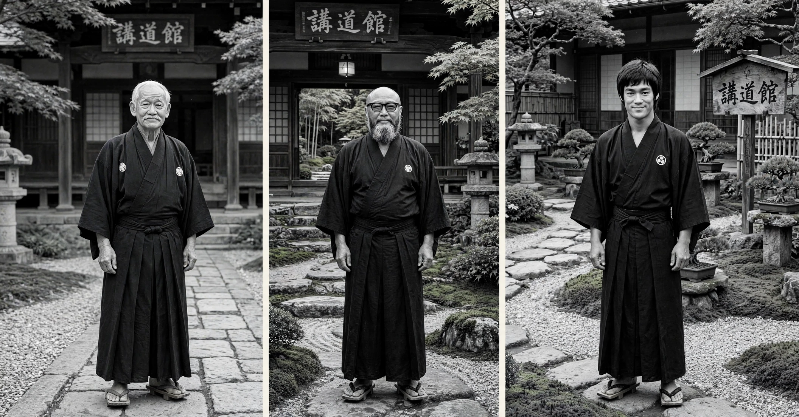

La palabra "sensei" se usa mucho y se entiende poco. No es solo "profesor": es alguien que ha caminado antes ese camino y te enseña a caminarlo tú.
Qué significa realmente "sensei"
En japonés, sensei se traduce literalmente como "el que ha nacido antes". No habla de un título ni de un cinturón, habla de experiencia y de camino recorrido. Un sensei no es solo quien te corrige la postura: es quien te muestra, con su propia disciplina, que la técnica y la calma se entrenan igual, un día detrás de otro.
Por eso, en las artes marciales tradicionales, el respeto al sensei no es hacia una persona en concreto, sino hacia todo lo que representa: constancia, humildad, y la voluntad de seguir practicando incluso cuando no se ve el progreso.
Tres fundadores que explican qué es un sensei
Jigoro Kano — el fundador del judo
Kano creó el judo a finales del siglo XIX, tomando técnicas del antiguo jujutsu y transformándolas en un sistema pensado tanto para el combate como para la educación de la persona. Su idea central, "el máximo rendimiento con el mínimo esfuerzo", no hablaba solo de técnica: hablaba de no gastar energía peleando contra lo que no se puede cambiar, y usar en su lugar la inteligencia y la calma.
So Doshin — el fundador del Shorinji Kempo
Tras la Segunda Guerra Mundial, So Doshin fundó el Shorinji Kempo en un Japón devastado, con la idea de que la fuerza física debía ir siempre acompañada de una base ética y espiritual. Para él, entrenar el cuerpo sin entrenar el carácter no servía de nada: el objetivo final era formar personas capaces de protegerse a sí mismas y de aportar algo bueno a su comunidad.
Bruce Lee — el fundador del Jeet Kune Do
Bruce Lee rompió con la rigidez de los estilos tradicionales y propuso algo distinto: quedarte con lo que es útil, descartar lo que no lo es, y adaptar la técnica a ti mismo en vez de forzarte a encajar en una forma fija. Su filosofía, resumida en la idea de "ser como el agua", sigue siendo una de las lecciones más citadas de todas las artes marciales modernas.

Qué me enseñó a mí el tatami
No hace falta ser cinturón negro para aprender esto. Cada vez que pisas un tatami y repites un movimiento por enésima vez sin resultado inmediato, estás entrenando exactamente lo mismo que buscaban estos tres fundadores: la capacidad de sostener el esfuerzo sin reaccionar desde la frustración.
Esa misma capacidad es la que uso, fuera del tatami, para no reaccionar en automático cuando algo me altera. La calma no es no sentir nada; es no dejar que lo que sientes decida por ti.
¿Quieres entrenar esa calma? La guía Respira sin Ansiedad es básicamente Zanshin y Fudoshin aplicados a tu día a día en 14 días.